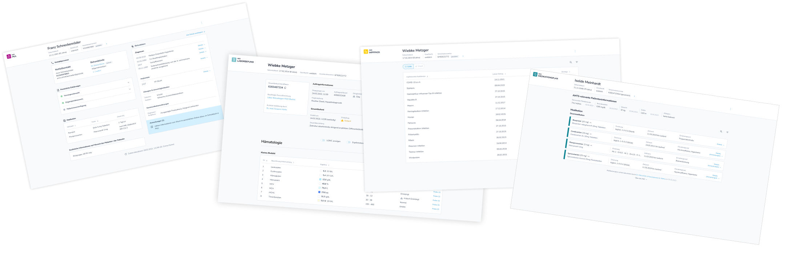

Seiteninhalt:
Als UX-Visualisierungen bezeichnen wir die visuellen, meist interaktiv erfahrbaren, Ergebnisse unserer UX-Design-Arbeit zu den MIOs. UX-Design, kurz für User Experience Design, befasst sich mit der Analyse, Kreation und Optimierung der Nutzer:innenerfahrung. Wie können die Nutzer:innen (das heißt bei uns: alle Personen in der Versorgung, die mit den MIOs arbeiten werden) so einfach und schnell wie möglich an das gewünschte Ziel kommen, obwohl die von ihnen genutzten Systeme teilweise sehr komplexen Anforderungen unterliegen?
Unsere UX-Visualisierungen haben in der Regel die Form von Userflows: Damit meinen wir Abfolgen von Screens, die einen bestimmten Prozess aus der Versorgung abbilden. Meistens stellen wir die Userflows so zur Verfügung, dass sie Schritt für Schritt und mit Hilfe von zusätzlichen Erklärtexten nachvollzogen werden können. Wenn wir die Flows so konfigurieren, dass sie durch freies Klicken erkundet werden können, sprechen wir auch von “Klickdummys”.
Mit den UX-Designs wollen wir zeigen, wie MIOs künftig in der Versorgung eingesetzt werden könnten und gleichzeitig der umsetzenden Industrie eine mögliche Visualisierung unserer Spezifikationen an die Hand geben. Die UX-Visualisierungen sind ein wichtiges Tool bei der Entwicklung der MIOs, denn sie…
…erleichtern die Kommunikation mit unseren Stakeholdern
MIOs sind Datenformate. Wollen wir mit Anwender:innen über die Inhalte und Funktionsweisen von MIOs sprechen, helfen uns UX-Visualisierungen, die Vision der MIOs zu transportieren. Statt über abstrakte Datenfelder im Informationsmodell oder in der FHIR®-Spezifikation zu sprechen, macht eine UX-Visualisierung das MIO erlebbar. Sie verbindet die Spezifikation mit den Versorgungsprozessen und hilft so, über die fachlichen Inhalte und die technischen Funktionen eines MIO zu sprechen.
…Umsetzungshilfe für die Industrie sind
Die UX-Visualisierungen zeigen unsere Vision einer guten, sinnvollen und tiefen (nativen) Integration des MIO in ein Primärsystem. Sie haben keinen normativen oder verbindlichen Charakter und sind reine Vorschläge für eine mögliche Umsetzung. Für implementierende Unternehmen können sie als Orientierungshilfe dienen und zeigen, wie Prozesse im Primärsystem durch das MIO idealer Weise unterstützt werden können.
…wichtige Erkenntnisse für die Entwicklung unserer Spezifikation liefern
Im Rahmen der Entwicklung unserer UX-Designs beschäftigen wir uns intensiv anhand konkreter medizinischer Fallbeispiele mit dem MIO, seinen Inhalten, technischen Funktionen und den Prozessen, die das MIO bei den jeweiligen Anwender:innen unterstützen soll. Durch diese Einbindung der Nutzer:innen-Perspektive können wir inhaltliche und technische “Denkfehler” aufdecken und erhalten immer wieder wertvollen Input für unsere Spezifikation und Implementierungsleitfäden.
Unser Ziel ist es, UX-Visualisierungen für jedes MIO zu entwickeln.
MIOs in der Standardanzeigeansicht:
Die Inhalte eines MIO werden hier in einem isolierten Rahmen abgebildet, um den Fokus darauf zu lenken, welche Informationen in einem MIO enthalten sind. Solch eine Ansicht kann für Systeme relevant sein, die rein lesend auf die MIOs zugreifen und keine Notwendigkeit zur Weiterverarbeitung der enthaltenen Daten haben. Gegebenenfalls sind zwar auch kleinere Interaktionen (Suchen, Filtern) innerhalb der Komponente möglich – eine Übernahme in das eigene System oder Bearbeitung der Inhalte des MIO allerdings nicht.

Userflows für die native Integration des MIO im Primärsystem:
Der wahre Nutzen der MIOs kommt erst dann zum Vorschein, wenn wir annehmen, dass die unterschiedlichen Primärsysteme zur vollständigen Handhabung der MIOs in der Lage sind. Es bedeutet, dass die MIOs nicht nur lesbar gemacht werden, sondern die strukturierten Inhalte sinnvoll in den jeweiligen Systemkontext einfließen und somit der Arbeitsalltag für die Anwender:innen auf bestmögliche Weise erleichtert wird. Auch das Bearbeiten und Erstellen von MIOs ist zwingend Teil dieser Vision und Gegenstand unserer UX-Betrachtungen.<div> </div>
In unseren Userflows bilden wir anhand konkreter Fallbeispiele und im Rahmen von “Dummy-Primärsystemen” ab, wie die Workflows in der Versorgung der Zukunft aussehen könnten. Dabei betrachten wir komplette Versorgungsprozesse entlang der Patient Journey über unterschiedliche Akteure in unterschiedlichen Sektoren hinweg und versuchen nicht nur, die praktischen Vorteile innerhalb des Nutzungskontextes herauszuarbeiten, sondern auch, Lösungsansätze für mögliche entstehende Schwierigkeiten in einem digitalisierten Gesundheitssystem mitzuliefern (z. B. bei der Synchronisierung lokaler Datenstände mit “ePA-Datenständen” usw.).
Unsere UX-Visualisierungen werden mit dem Designtool Figma erstellt. Bitte beachten Sie: Dabei handelt es sich nicht um eine programmierte Anwendung, sondern um einen Prototyp zur Veranschaulichung von Abläufen und Gestaltungsideen. Für die Bedienung gilt:
Interaktive Flächen erkennen:
Manche Elemente sehen auf den ersten Blick interaktiv aus, sind es aber nicht. Interaktive Bereiche erkennen Sie daran, dass sie kurz blau aufblinken, wenn Sie irgendwo auf den Bildschirm klicken.
Zum Startsscreen zurückkehren:
Wenn Sie zum Startscreen zurückkehren möchten, drücken Sie die Taste ‘R’.
Viel Spaß beim Klicken!
Wir haben zahlreiche Reviews mit unseren Stakeholdern durchgeführt, um unsere Konzepte für eine optimale Nutzererfahrung (UX) im Zusammenhang mit dem MIO Laborbefund zu validieren. In Zusammenarbeit mit Vetreter:innen aus unserem labormedizinischem Beirat, dem HÄV, dem bvitg und der DKG haben wir wertvolles Feedback aus der Perspektive der Versorgenden sowie der Industrie gesammelt. Auf dieser Grundlage können wir nun einen abgestimmten UX-Vorschlag für die Darstellung eines einzelnen Laborbefunds präsentieren, der die wichtigsten UX-Thesen umfasst. Außerdem können wir Entwürfe zu einer möglichen Integration im Primärsystem bereitstellen, die kritische UX-Fragen fokussieren und für die weitere Spezifikationsarbeit als Diskussionsgrundlage dienen können.
Eine Prüfung der Umsetzbarkeit der hier gezeigten Vision oder eine Einordnung in konkrete Einführungsschritte muss in einem nächsten Schritt gemeinsam mit der gematik erarbeitet werden.
Bezüglich der Workflows in den Primärsystemen sind wir zu folgendem Ergebnis gekommen: Laborbefunde werden nach ihrer Erstellung als MIO weiterhin als Einzeldokumente behandelt. Das bedeutet, sie können wie bisherige (PDF-)Befunde gelesen, versendet, hoch- und heruntergeladen werden. Diese Standardaktionen haben wir nicht gesondert visualisiert. Unsere Prozessanalyse hat jedoch andere kritische UX-Punkte identifiziert, die wir näher betrachten möchten: die zusammengeführte Darstellung von Ergebnissen über mehrere Laborbefunde hinweg (Kumulativdarstellung) und die Interaktionen zwischen Primärsystem und (Service-basierter) ePA zum Abrufen der Laborbefunde.
Der besondere Mehrwert der strukturierten Daten liegt in der flexiblen Nachnutzung. Beispielsweise können Befunde aus verschiedenen Datenquellen, d. h., aus unterschiedlichen Laboren, in einer Übersicht, etwa als Kumulativansicht (tabellarisch und chronologisch sortiert), angezeigt werden. Weitere Vorteile umfassen die Übertragung der Daten in andere Berichtsdokumente sowie (KI-)gestützte Auswertungen von Verläufen in Verbindung mit weiteren Gesundheitsdaten und vieles mehr. Wir betrachten aber die Kumulativdarstellung als das relevanteste MIO-spezifische Nachnutzungspotenzial und haben uns daher am Beispiel eines Hausärzt:innen-PVS Gedanken gemacht, was hier bei Implementierung zu beachten wäre. Dabei haben wir die zentralen UX-Thesen sowie offene Fragestellungen dokumentiert.
Eine Erkenntnis hier ist, dass eine Kumulativdarstellung nur dann effektiv ist, wenn Untersuchungen, die inhaltlich zusammengehören, auch in einer Zeile angezeigt werden. Aktuell entspricht dies nicht der heterogenen Dokumentationsweise der verschiedenen Labore und deren LOINC®-Codierung. Die Vielzahl an Codes und deren spezifische Details führen oft zu mehreren Codierungsmöglichkeiten. Dieses Problem ist nicht neu, da Praxissysteme bereits jetzt strukturierte Daten aus unterschiedlichen Quellen zusammenführen. Mit der Einführung des MIO und der damit verbundenen Einbeziehung einer größeren Anzahl an Befunden aus verschiedenen Quellen wird dieses Thema jedoch noch bedeutender.
Um diese Herausforderungen zu adressieren, arbeiten wir an der Ausarbeitung einer Lösung zunächst für die gebräuchlichsten Laboruntersuchungen, die zugleich auch für Verlaufsansichten relevant sind (s. hierzu die Ausführungen zur Kernliste unter Unterstützungsleistungen zur LOINC-Einführung).
Ein weiterer zentraler Punkt aus UX-Perspektive sind die möglichen ePA-Interaktionen. Die Art und Weise, wie Labordaten in den Service-basierten Teil der ePA integriert werden, bestimmt, wie auf diese beispielsweise im Rahmen von Suchanfragen nach Vorbefunden zugegriffen werden kann. Im Vergleich zur Dokumenten-basierten ePA ergeben sich hier ganz neue Möglichkeiten, insbesondere, was die Suchkriterien anbetrifft.
🛈 Hinweis
Unsere Visualisierungen sollen als Diskussionsgrundlage für weitere Entwicklungsschritte dienen und stellen keine verbindliche Vorgabe zur Umsetzung dar.